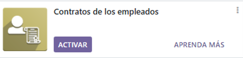
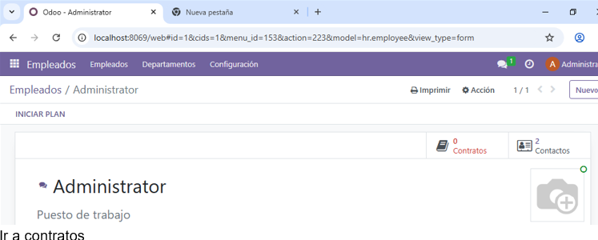
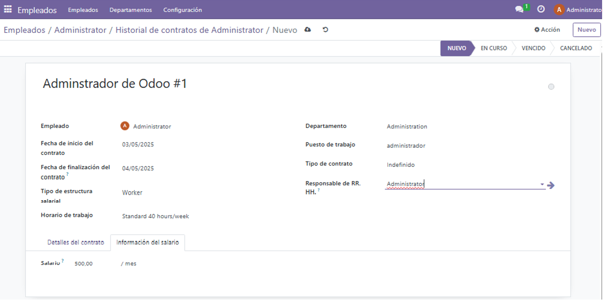
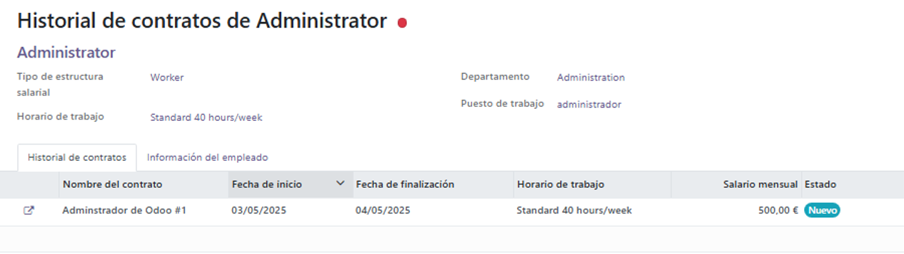

Módulo de Contratos de empleados
Sistema completo para la gestión, de los contratos de los empleados.
Activación del módulo
Paso 1: Activar módulo
Desde "Configuración" > "Módulos", busca y activa el módulo de "Contratos de empleados".
Es necesario tener permisos de administrador.
Creación de un contrato
Paso 1: Acceder al menú de contratos de empleados
Selecciona empleado al que quieras crear/modificar/eliminar de contrato, en este caso "Administrador".

Paso 2: Crear nuevo contrato
Haz clic en "Contratos":
Paso 3: Datos del contrato
Aqui podremos rellenar los datos de la persona que le vayamos a contratar. Abajo podemos establecer el sueldo y las observaciones/comentarios
Paso 4: Información contrato
Como se puede ver el contrato aparecerá creado y con el estado "Nuevo" y con otros datos. El estado va cambiando mietras el tiempo transcurre, por ejemplo: Si el contrato exede la fecha de finalizacion pues tendra el estado de "Caducado".
